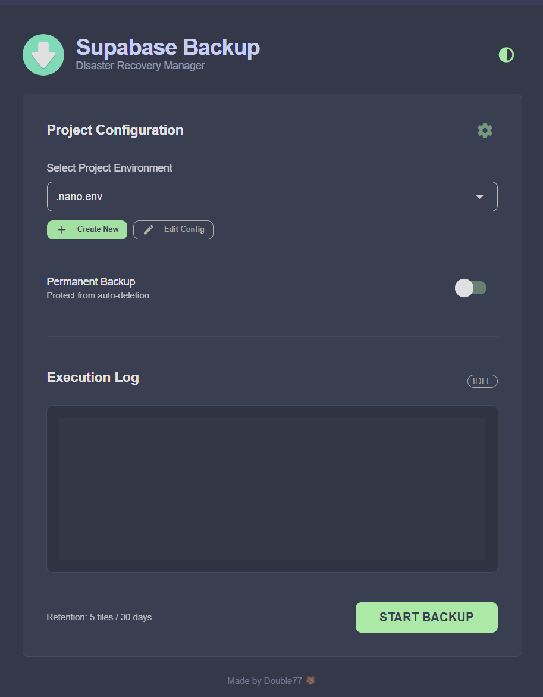

Secure Your Supabase Data
A professional, reliable, and automated backup solution for your Supabase projects. Features a modern GUI and a powerful headless CLI for automation.
Download Latest Release


Modern GUI Dashboard
Manage multiple projects, create configs, and view execution logs in a beautiful Catppuccin-themed interface.
Portable & Standalone
Runs as a standalone Windows executable (.exe). No Python installation required.
Secure Encryption
AES-256 encryption automatically secures your backups into protected .zip archives.
Automated Retention
Built-in policy engine cleans up old backups based on your settings (e.g., "Keep last 5 files").
Headless CLI
Designed for automation. Easily integrate with Cron jobs or GitHub Actions using the command line engine.
Granular Recovery
Backups are split into roles, schema, and data, allowing for precise and flexible restoration.